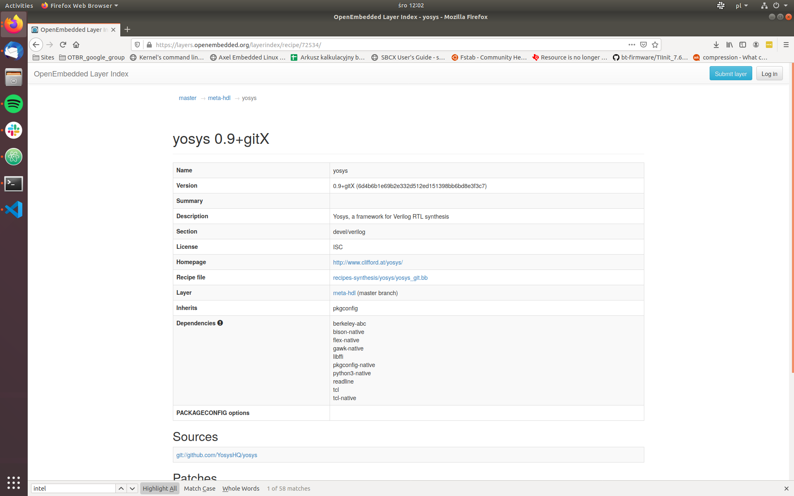
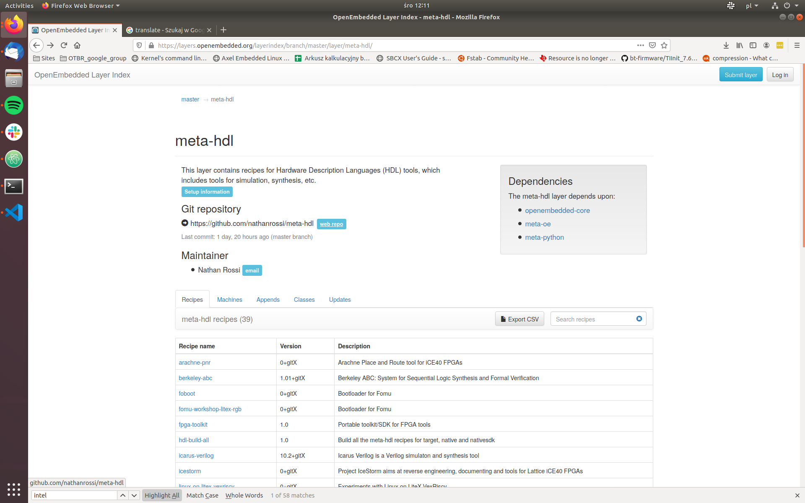

Managing packages in Zarhus OS
Description
This guide will describe how to add a package into Zarhus OS image in case you want to experiment or to build your custom Zarhus OS image.
Warning
This guide is recommended for advanced users, because adding or removing packages can cause build time problems as well as runtime problems which are hard to debug.
We can have two cases here, where the theory of operation will be different. In the first one, the recipe for the package we are looking for already exists and we will simply use it. In the second one, we will need to create the recipe by ourselves.
The assumption is that a recipe for a given package already exists in one of the publicly available meta layers.
What is a recipe?
A recipe is a BitBake concept. It is a file containing metadata describing how to fetch the source code for a given piece of software, and later how to configure, compile and install it. Check the BitBake user manual for more information.
Look for existing recipe
Before we decide which path we need to follow, we need to know whether the recipe for given software already exists or not. The OpenEmbedded layer index can help us with that. It registers most of the layers which may be worth looking at. If we fail to find a recipe there, there is still a chance of finding one somewhere else. In such cases simply try to google it. A viable option is also to look through (or also ask on) the Yocto mailing list.
Search recipe for the given software
The OpenEmbedded layer index can be found
here. For
example we will search for yosys recipe. It will serve as an example of adding
a new layer to the kas/common.yml file.

If there were more than one recipe available for this package, we would see a list from which one can choose the appropriate recipe.
As we can see yosys is available in the meta-hdl layer.
Add package to the image when the recipe already exists
Add new layer to kas/common.yml file
If the recipe is available in one of the already used layers, this step can be skipped, otherwise you will need to add an additional layer to your image.
Some recipes are available in layers which are not used in our build yet. In
such cases we need to add them to the kas/common.yml file. To install the
yosys package, meta-hdl layer needs to be added to the kas/common.yml
file. We need the URL of the layer repository and refspec of the commit we want
to use. This information can be obtained by clicking on the layer page provided
in the recipe information. There will be a link to the repository page.

What is kas/common.yml file?
In Zarhus a tool named
kas-container is being used for building
images, so the meta-zarhus layer contains several .yml files to work on.
The kas/common.yml contains common definitions for all images being build
(e.g. common layers or common bitbake variables).
From there we can open a repository website where we can find information we
need. Then add those lines to kas/common.yml file:
meta-hdl:
url: https://github.com/nathanrossi/meta-hdl
refspec: fa82506e0964bfa36519ecaea13c6397e25c81ef
url is a link to clone git repository and refspec is a git revision.
When choosing which one to use it is best to check if the repository has
branches named as Yocto releases. If it is true, we should take the top commit
from the one matching the Yocto release used in
meta-zarhus.
If the repository does not provide such branches, we should use the top commit
from the master branch.
Add package to the image
Basically, to add a package we need to append its name to the
IMAGE_INSTALL
variable. It can be done in multiple ways. We will describe here two ways of
doing that. The second one can be considered as a better practice to follow.
-
Add the package name directly to the image recipe (
recipes-zarhus/images/zarhus-base-image.inc).- Adding packages directly to the image recipe may turn out into maintenance issues quickly
IMAGE_INSTALL_append = " \ packagegroup-zarhus-system \ yosys \ " -
Add the package name to one of the
packagegroupsin thepackagegroupsrecipe (recipes-zarhus/packagegroups/packagegroup-zarhus.bb)- Dividing packages in structured
packagegroup(e.g. divided by part of the system or by a functionality) is easier to maintain in the long run
RDEPENDS_${PN}-system = " \ packagegroup-core-base-utils \ chrony \ chronyc \ yosys \ " - Dividing packages in structured
Verification
Rebuild and reinstall (update) the system. Log into the platform and check if the package is available.
# yosys -H
/----------------------------------------------------------------------------\
| |
| yosys -- Yosys Open SYnthesis Suite |
| |
| Copyright (C) 2012 - 2019 Clifford Wolf <clifford@clifford.at> |
| |
| Permission to use, copy, modify, and/or distribute this software for any |
| purpose with or without fee is hereby granted, provided that the above |
| copyright notice and this permission notice appear in all copies. |
| |
| THE SOFTWARE IS PROVIDED "AS IS" AND THE AUTHOR DISCLAIMS ALL WARRANTIES |
| WITH REGARD TO THIS SOFTWARE INCLUDING ALL IMPLIED WARRANTIES OF |
| MERCHANTABILITY AND FITNESS. IN NO EVENT SHALL THE AUTHOR BE LIABLE FOR |
| ANY SPECIAL, DIRECT, INDIRECT, OR CONSEQUENTIAL DAMAGES OR ANY DAMAGES |
| WHATSOEVER RESULTING FROM LOSS OF USE, DATA OR PROFITS, WHETHER IN AN |
| ACTION OF CONTRACT, NEGLIGENCE OR OTHER TORTIOUS ACTION, ARISING OUT OF |
| OR IN CONNECTION WITH THE USE OR PERFORMANCE OF THIS SOFTWARE. |
| |
\----------------------------------------------------------------------------/
Add package to the image when the recipe does not exist
If we fail to find the recipe for the software we need (or maybe we have a custom software) we need to develop the recipe ourselves.
This section will describe how to write a recipe to install some packages to the image. We will provide three examples:
- A recipe for our custom file (simple shell script as an example),
- A recipe for an open-source software project (Python module as an example),
- A recipe for binary components (printer drivers as an example).
More detailed information can be found in the "writing a new recipe" section in Yocto Manual.
A recipe for our custom file
This is quite a common scenario that we want to install some additional scripts or configuration files into the image. A simple shell script is used as an example, but it can be anything more complicated.
The example shell script looks as follows:
$ cat file-example.sh
#!/bin/bash
echo "This is example script installed in the image."
Create directory structure
Create a directory with the name of the recipe inside the layer. It can be
placed in recipes-example, i.e.:
mkdir recipes-example/example-file
Inside that directory create another one, also named it example-file. There
we can put any files which we want to use in the recipe. It has to be named like
a recipe name or just files.
mkdir recipes-example/example-file/example-file
The script should be placed at
recipes-example/example-file/example-file/file-example.sh.
Create a recipe file. Each recipe file should be named according to this
pattern: PN_PV.bb, where
PN
is the name of the recipe and
PV
is the version number of the recipe. For the example, it will be
example-file_0.1.bb.
Create a recipe
Below is the content of the recipe:
SUMMARY = "Install example script in /usr/bin."
LICENSE = "MIT"
LIC_FILES_CHKSUM = "file://${COMMON_LICENSE_DIR}/MIT;md5=0835ade698e0bcf8506ecda2f7b4f302"
SRC_URI = "file://file-example.sh \
"
RDEPENDS_${PN} = "bash"
S = "${WORKDIR}"
do_install() {
install -d ${D}${bindir}
install -m 0755 ${S}/file-example.sh ${D}${bindir}/
}
In the SRC_URI variable we list files or URLs to sources which we want to use in the recipe.
The
RDEPENDS
variable determines runtime dependencies which have to be installed in the image
along with our package so it works correctly. In this case, we certainly need
bash as an interpreter for our simple script.
do_install() section determines what will be installed in the image.
S
variable is the working directory while
D
variable means destination directory. Variable bindir is one of the variables
defined in poky/meta/conf/bitbake.conf and it expands to /usr/bin.
Variables like libdir or bindir should be used within the recipes, rather
than hardcoded /usr/bin or /usr/lib/ paths.
Add a package to the image as already explained in the Add package to the image section.
Verification
Rebuild and reinstall (update) the system. Log into the platform and check if the package is available.
# file-example.sh
This is example script installed in the image.
A recipe for open-source software project
In this example we want to add a Python module which can be found on the
pypi website. From pypi we will need a URL to the
source which can be found under the Download files section. Let's say that
we need the ipaddresses module.
Instead of creating a recipe manually like previously, we will use
recipetool
inside the kas-container shell this time.
Creating recipe with recipetool
At first, we need to obtain a URL to a source of the Python module.
Then, run kas-container in shell mode. Use the same command as for building the
image, but use shell command instead of the build command. For example:
$ SHELL=/bin/bash kas-container shell meta-zarhus/kas-debug.yml
Use recipetool to create the recipe. recipetool command syntax:
(docker)$ recipetool create -o recipeName_version.bb URLtoSource
For recipeName we should use the name of the module. We can use the python-
prefix.
Result of running recipetool to create a recipe for that Python module.
(docker)$ recipetool create -o python-ipaddresses_0.0.2.bb https://files.pythonhosted.org/packages/8c/ca/e52321c8d9b4b01db6dd73d9df65ed011bd2199e780367faf2f6a8bf0229/ipaddresses-0.0.2.zip
NOTE: Starting bitbake server...
INFO: Fetching https://files.pythonhosted.org/packages/8c/ca/e52321c8d9b4b01db6dd73d9df65ed011bd2199e780367faf2f6a8bf0229/ipaddresses-0.0.2.zip...
Loading cache: 100% |########################################################################################################################################################################| Time: 0:00:00
[....]
Initialising tasks: 100% |###################################################################################################################################################################| Time: 0:00:00
Sstate summary: Wanted 0 Found 0 Missed 0 Current 2 (0% match, 100% complete)
NOTE: Executing Tasks
NOTE: Setscene tasks completed
NOTE: Tasks Summary: Attempted 18 tasks of which 16 didn't need to be rerun and all succeeded.
INFO: Scanning the entire source tree, as one or more of the following setup keywords are non-literal: py_modules, scripts, packages.
INFO: Scanning paths for packages & dependencies: .
INFO: Recipe python-ipaddresses_0.0.2.bb has been created; further editing may be required to make it fully functional
Content of the automatically recipe:
# Recipe created by recipetool
# This is the basis of a recipe and may need further editing in order to be fully functional.
# (Feel free to remove these comments when editing.)
SUMMARY = "Shows your private and public IP addresses."
HOMEPAGE = "https://github.com/jcrmatos/ipaddresses"
# WARNING: the following LICENSE and LIC_FILES_CHKSUM values are best guesses - it is
# your responsibility to verify that the values are complete and correct.
#
# The following license files were not able to be identified and are
# represented as "Unknown" below, you will need to check them yourself:
# LICENSE.rst
# doc/license.rst
# ipaddresses/LICENSE.txt
# ipaddresses/doc/license.html
# ipaddresses/doc/_sources/license.txt
LICENSE = "GPL-2.0+"
LIC_FILES_CHKSUM = "file://LICENSE.rst;md5=24cba5e1e1bce23f7530914721f826b1 \
file://doc/license.rst;md5=414452756434e3f660368db630471155 \
file://ipaddresses/LICENSE.txt;md5=24cba5e1e1bce23f7530914721f826b1 \
file://ipaddresses/doc/license.html;md5=8e340f5da23d4699a779cfdb2371a32a \
file://ipaddresses/doc/_sources/license.txt;md5=414452756434e3f660368db630471155"
SRC_URI = "https://files.pythonhosted.org/packages/8c/ca/e52321c8d9b4b01db6dd73d9df65ed011bd2199e780367faf2f6a8bf0229/ipaddresses-${PV}.zip"
SRC_URI[md5sum] = "a4075f5ae2c874293eb0f3ab6269f9a9"
SRC_URI[sha256sum] = "28b8b835aa3df01819a5e0e3af09f8bdbe01dbbc505f4b43e45d23e7f94f0e03"
S = "${WORKDIR}/ipaddresses-${PV}"
inherit setuptools3
# WARNING: the following rdepends are from setuptools install_requires. These
# upstream names may not correspond exactly to bitbake package names.
RDEPENDS_${PN} += "python3-colorama python3-future"
# WARNING: the following rdepends are determined through basic analysis of the
# python sources, and might not be 100% accurate.
RDEPENDS_${PN} += "python3-colorama python3-compression python3-core python3-datetime python3-future python3-io python3-json python3-pickle python3-setuptools python3-shell python3-tkinter"
# WARNING: We were unable to map the following python package/module
# dependencies to the bitbake packages which include them:
# cx_Freeze
# py2exe
# sphinx
# ttk
Move recipe to Zarhus layer
Create a directory with the name of the recipe inside the meta-zarhus
layer. It can be placed in recipes-example, i.e.:
$ mkdir recipes-example/python-ipaddresses
Add the generated recipe to the directory.Then, add a package to the image as already explained in the Add package to the image section.
Verification
Rebuild and reinstall (update) the system. Log into the platform and check if package (module) is available.
# python3
Python 3.7.5 (default, Nov 30 2019, 19:04:26)
[GCC 9.2.0] on linux
Type "help", "copyright", "credits" or "license" for more information.
>>> help("ipaddresses")
Help on package ipaddresses:
NAME
ipaddresses - Package initialization file.
PACKAGE CONTENTS
appinfo
cli
common
gui_tk_func
ipaddresses
localization
shared
DATA
absolute_import = _Feature((2, 5, 0, 'alpha', 1), (3, 0, 0, 'alpha', 0...
division = _Feature((2, 2, 0, 'alpha', 2), (3, 0, 0, 'alpha', 0), 8192...
print_function = _Feature((2, 6, 0, 'alpha', 2), (3, 0, 0, 'alpha', 0)...
unicode_literals = _Feature((2, 6, 0, 'alpha', 2), (3, 0, 0, 'alpha', ...
FILE
/usr/lib/python3.7/site-packages/ipaddresses/__init__.py
A recipe for binary component (printer drivers as an example)
In this case, we want (or need) to present how to add a recipe for a binary (pre-compiled) software component. Generally, this is not a good practice and all software components should be cross-compiled as part of the Yocto build. But sometimes there is no other way as some software is distributed in a binary form only.
Printer drivers are often distributed this way, that is why one of them was selected as an example. With this recipe, we want to add a printer driver. We will generate a recipe manually and we will discuss problems which occurred while building it.
Create directory structure
Obtain URL to a source of the printer driver. The original package can be
found
here.
Unfortunately, the directory name has () in it's name and BitBake fails to
parse it. That is why reuploading to a cloud with a different directory name was
used as a workaround.
Create a directory with the name of the recipe inside the meta-zarhus layer.
It can be placed in recipes-extended, i.e.:
$ mkdir recipes-extended/godex-cups-printer-driver
Create recipe file
Each recipe file should be named according to this pattern: PN_PV.bb, where:
PN
is the name of the recipe and
PV
is the version number of the recipe. For this driver, it will be
godex-cups-printer-driver_1.1.4.bb.
This is the content of the recipe:
LICENSE = "Unknown"
SRC_URI = "https://cloud.3mdeb.com/index.php/s/irabKp2xKjPLH68/download;downloadfilename=GoDEXdriver-1.1.4.tar.gz"
LIC_FILES_CHKSUM = "file://ChangeLog;md5=765abf1f23a5b03f83fd90c5135731b9"
SRC_URI[md5sum] = "72e4fc543e4b3944608eefc42d63bd56"
SRC_URI[sha256sum] = "8165324bb2bb595ff75f305463c8dfa61b38b7a3347fbe7ef8a208977511b3ba"
S = "${WORKDIR}/GoDEXdriver-1.1.4"
do_install () {
install -d ${D}${sysconfdir}/cups/ppd
for ppd in ${S}/ppd/*
do
install -m 0644 $ppd ${D}${sysconfdir}/cups/ppd/$(basename $ppd)
done
install -d ${D}${libexecdir}/cups/filter
install -m 0755 ${S}/rastertoezpl ${D}${libexecdir}/cups/filter
}
DIRFILES = "1"
RDEPENDS_${PN} = "cups cups-lib cups-libimage"
In
SRC_URI
there is a URL to a driver with modified a name. SRC_URI[md5sum] and
SRC_URI[sha256sum] are respectively the md5 and sha256 sum of a file from
the SRC_URI variable.
In the do_install() section we install every important file into the image.
In
RDEPENDS
there are every cup related packages which are needed for that printer driver
to work.
DIRFILES = "1" fixes build error.
In our case there was packaging conflict between the cups and godex recipes.
By setting this variable we change the way in which the directories are
owned by the packages. The packaging is set to RPM and the packaging actions
are defined in the
package_rpm.bbclass
Add a package to the image. It can be done by adding the name of the created
recipe to one of the packagegroup defined in
recipes-zarhus/packagegroups/packagegroup-zarhus.bb, i.e.:
RDEPENDS_${PN}-printers = " \
cups \
godex-cups-printer-driver \
hplip \
hplip-backend \
hplip-cups \
hplip-filter \
hplip-ppd \
"
Build the image.
Verification
Check if needed postscript printer description files were installed.
# ls /etc/cups/ppd/godex-*
/etc/cups/ppd/godex-bp500l.ppd /etc/cups/ppd/godex-ez1105.ppd /etc/cups/ppd/godex-ez320.ppd /etc/cups/ppd/godex-g300.ppd /etc/cups/ppd/godex-rt200i.ppd /etc/cups/ppd/godex-rt833i.ppd
/etc/cups/ppd/godex-bp500ldt.ppd /etc/cups/ppd/godex-ez120.ppd /etc/cups/ppd/godex-ez330.ppd /etc/cups/ppd/godex-g330.ppd /etc/cups/ppd/godex-rt230.ppd /etc/cups/ppd/godex-rt860i.ppd
/etc/cups/ppd/godex-bp520l.ppd /etc/cups/ppd/godex-ez1200p.ppd /etc/cups/ppd/godex-ez520.ppd /etc/cups/ppd/godex-g500.ppd /etc/cups/ppd/godex-rt230i.ppd /etc/cups/ppd/godex-rt863i.ppd
/etc/cups/ppd/godex-bp520ldt.ppd /etc/cups/ppd/godex-ez130.ppd /etc/cups/ppd/godex-ez530.ppd /etc/cups/ppd/godex-g530.ppd /etc/cups/ppd/godex-rt700.ppd /etc/cups/ppd/godex-zx1200i.ppd
/etc/cups/ppd/godex-bp530l.ppd /etc/cups/ppd/godex-ez1300p.ppd /etc/cups/ppd/godex-ez6200p.ppd /etc/cups/ppd/godex-ge300.ppd /etc/cups/ppd/godex-rt700i.ppd /etc/cups/ppd/godex-zx1200xi.ppd
/etc/cups/ppd/godex-dt2.ppd /etc/cups/ppd/godex-ez1305.ppd /etc/cups/ppd/godex-ez6250i.ppd /etc/cups/ppd/godex-ge330.ppd /etc/cups/ppd/godex-rt700iw.ppd /etc/cups/ppd/godex-zx1300i.ppd
/etc/cups/ppd/godex-dt2x.ppd /etc/cups/ppd/godex-ez2050.ppd /etc/cups/ppd/godex-ez6300p.ppd /etc/cups/ppd/godex-hd820i.ppd /etc/cups/ppd/godex-rt700x.ppd /etc/cups/ppd/godex-zx1300xi.ppd
/etc/cups/ppd/godex-dt4.ppd /etc/cups/ppd/godex-ez2150.ppd /etc/cups/ppd/godex-ez6350i.ppd /etc/cups/ppd/godex-hd830i.ppd /etc/cups/ppd/godex-rt730.ppd /etc/cups/ppd/godex-zx1600i.ppd
/etc/cups/ppd/godex-dt4c.ppd /etc/cups/ppd/godex-ez2200p.ppd /etc/cups/ppd/godex-ezdt2.ppd /etc/cups/ppd/godex-mx20.ppd /etc/cups/ppd/godex-rt730i.ppd /etc/cups/ppd/godex-zx420.ppd
/etc/cups/ppd/godex-dt4l.ppd /etc/cups/ppd/godex-ez2250i.ppd /etc/cups/ppd/godex-ezdt4.ppd /etc/cups/ppd/godex-mx30.ppd /etc/cups/ppd/godex-rt730iw.ppd /etc/cups/ppd/godex-zx420i.ppd
/etc/cups/ppd/godex-dt4x.ppd /etc/cups/ppd/godex-ez2300p.ppd /etc/cups/ppd/godex-ezpi1200.ppd /etc/cups/ppd/godex-mx30i.ppd /etc/cups/ppd/godex-rt730x.ppd /etc/cups/ppd/godex-zx430.ppd
/etc/cups/ppd/godex-ez1100p.ppd /etc/cups/ppd/godex-ez2350i.ppd /etc/cups/ppd/godex-ezpi1300.ppd /etc/cups/ppd/godex-rt200.ppd /etc/cups/ppd/godex-rt823i.ppd /etc/cups/ppd/godex-zx430i.ppd